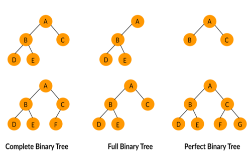

Shell
Project

The Gates Of Shell
Simple_shell is a command line interpreter, or shell, in the tradition of the first Unix shell written by Ken Thompson in 1971. This shell is intentionally minimalistic, yet includes the basic functionality of a traditional Unix-like command line user interface. Standard functions and system calls employed in simple_shell include: access, execve, exit, fork, free, fstat, getline, malloc, perror, signal, stat, wait, write.
Repository Contact